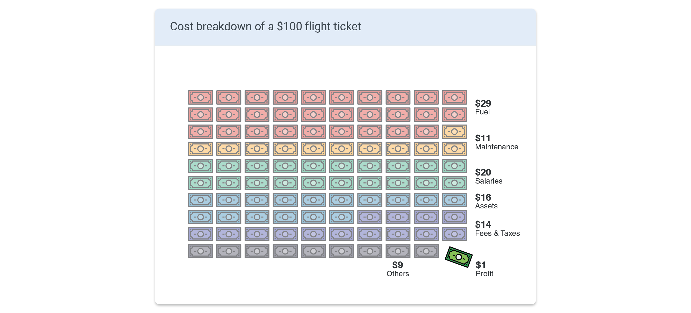
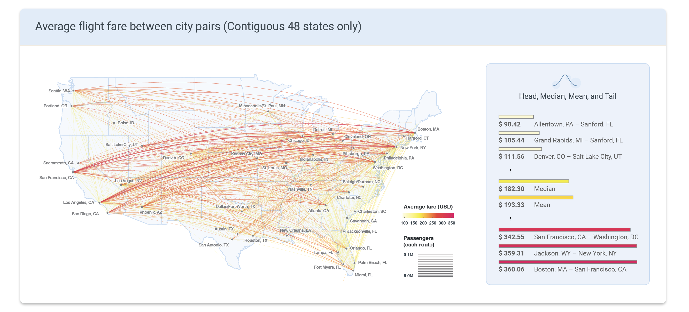
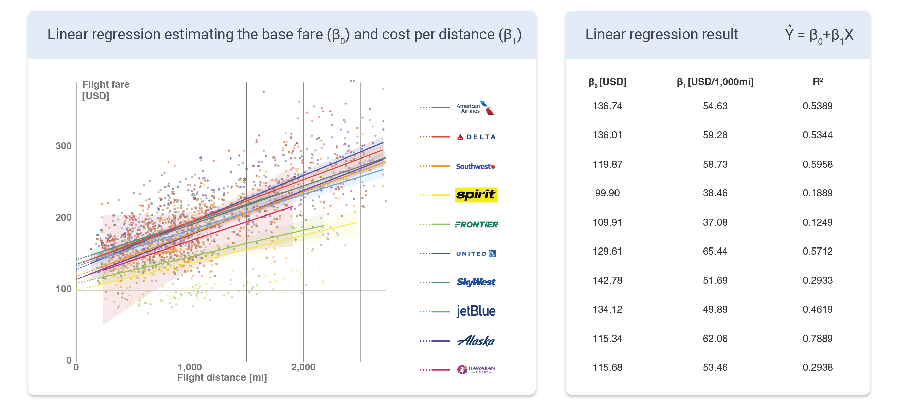
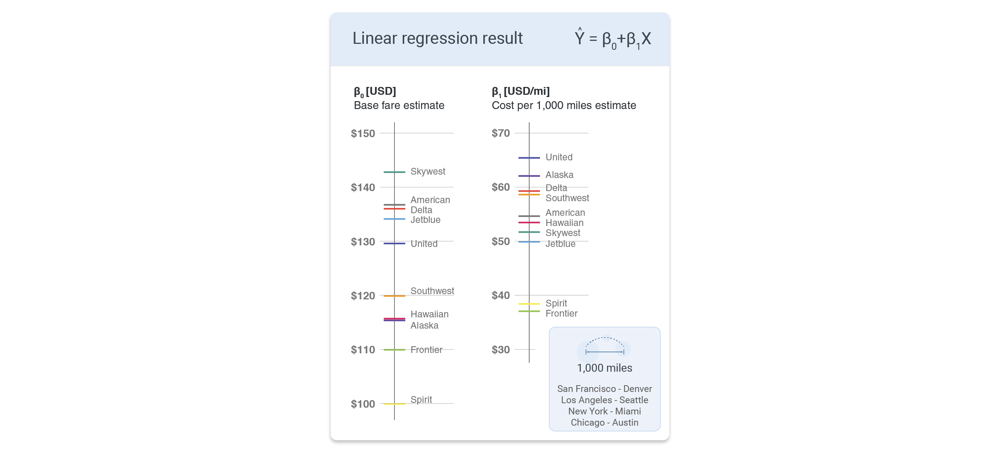
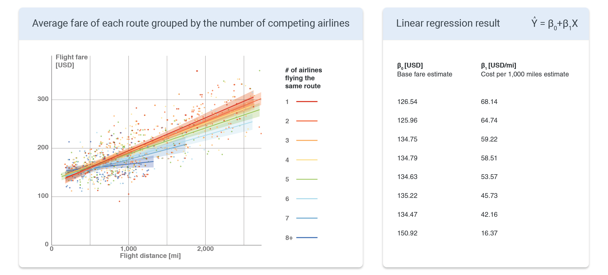
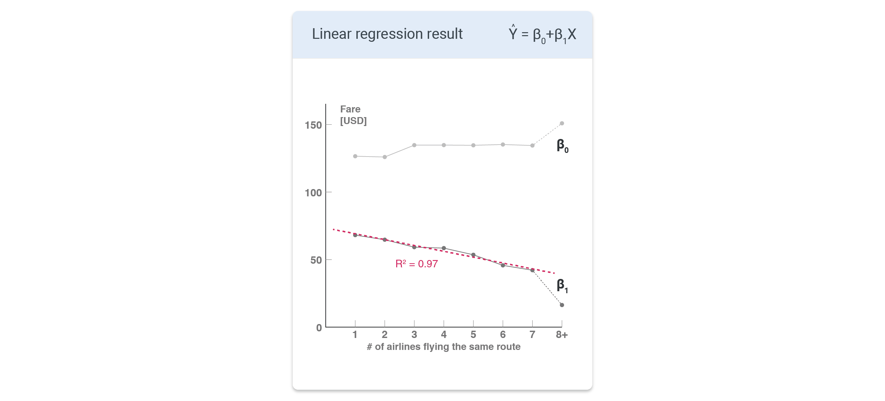
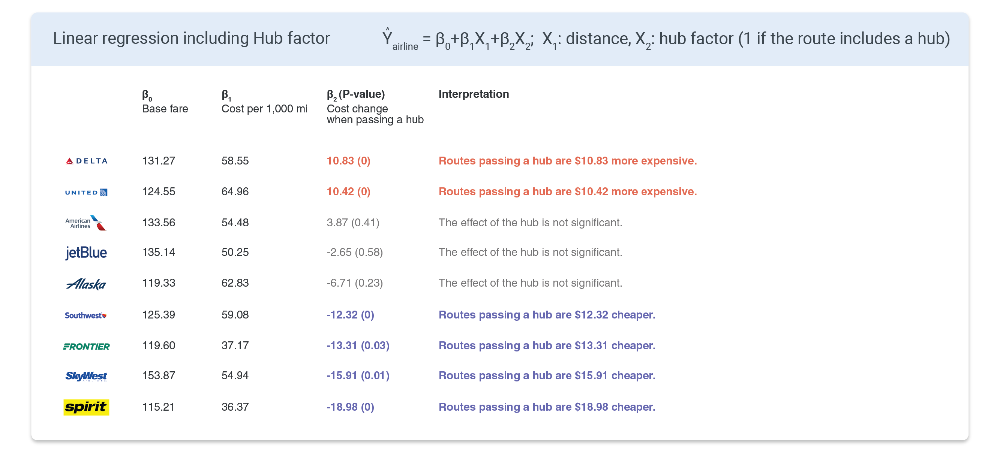
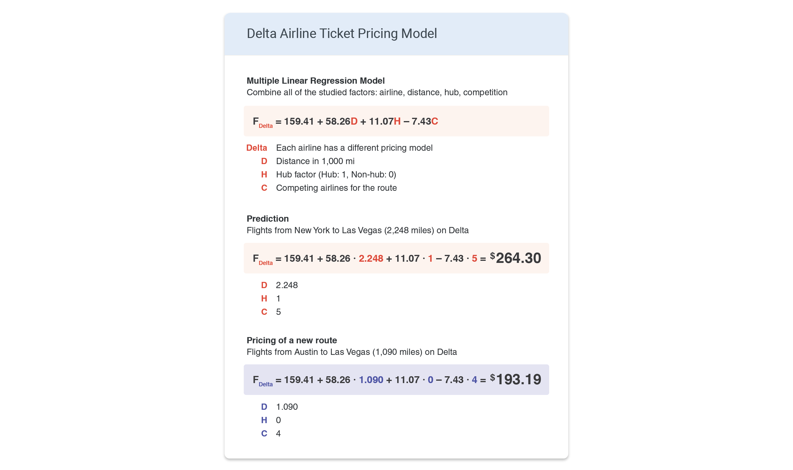

✈️ Introduction
Planning for a trip could be stressful. Especially when it includes flying somewhere, finding the right flight ticket could cause some headaches. Is this cheap? Should I try another airline? Should I make a transfer? What are the hidden fees? Travel metasearch engines like Google flights, Kayak, or Expedia can save us time by collecting the search results from different airlines, but the final decision is up to us.
There are currently more than 60 US airlines connecting the 50 states. The top 10 airlines make up 90% of the US aviation market, and 51 others make up the other 10%. In this competitive industry, airlines’ goal is routing and pricing the flights in the most efficient and profitable way. This is a very complex problem with a myriad of factors. Not only the demands between the cities, but all other existing routes are also potentially connecting flights that could affect the decision. Even more, all other existing routes of the competitors factor in. The following map shows the existing flight routes in the US. The circle size represents the number of passengers using each airport in 2021, and the line thickness represents the number of passengers using each route. Different color is assigned to each airline to differentiate the routes.
🎯 Research Question
This project covers an overview of the US airline industry and then identifies and quantifies the effects of competition and monopoly in the airline industry. Airfare can be studied from both customer's perspective and the business perspective. Here are the research questions that each side could have and that this research can potentially answer.
Customer’s perspective
- What does the air travel route map look like?
- Is my ticket cheaper than usual?
- Which airline is the cheapest?
- What affects the airfare?
Airline's perspective
- How does the competition affect the ticket price?
- How should we price our tickets?
- Which route should we target next?
🎫 Airfare
As explained above, the pricing of the ticket is one of the most important questions in the airline industry. First, as an overview, here is an average cost breakdown of a $100 flight ticket. The largest portion is the cost of fuel ($29). Fuel cost is, however, the most fluctuant variable that is difficult to predict and control. This makes the price of the ticket also fluctuate depending on the oil price and the global economy. $11 is used for the maintenance of the aircraft and facilities, $20 is for the salary, $16 is for the assets (aircraft, facilities, offices, etc.), $14 is for the fees and taxes, and $9 is for other expenditures and just $1 for the profit. Therefore, the ticket price includes a large base cost that has no direct relationship with the specific route. We will examine more on this 'base price' later.
Fuel and part of the salaries depend on the flight distance. The relationship between flight fare and distance is examined here. The map below shows the average fare between city pairs. The available dataset, unfortunately, only contained data from the contiguous 48 states. Therefore, care should be taken when analyzing the data for Alaska and Hawaiian airlines. As expected, the expensive flights were mostly transcontinental flights. The route with the highest average direct one-way cost was between Boston and San Francisco ($360.06), followed by Jackson, WY - New York ($359.31) and San Francisco - Washington DC ($342.55). On the other hand, the cheaper flights were mostly short-distance flights. The median and mean prices were $182.30 and $193.33, respectively.
📏 Distance vs Price
Here, we conduct a linear regression to quantitatively analyze the base fare and cost per distance for each airline. The scatter plot below compares the flight fare against the flight distance. Linear regression was performed on the points, which are grouped by the airline. The linear regression results are shown on the right. β0 is the y-intercept, which can be translated to the base fare that the customer has to pay even if the flight distance is zero. β1 is the cost per distance. For example, the price would increase by $54.63 for every 1,000 miles of flights when flying with American airlines.
Unsurprisingly, low-cost carriers like spirit and frontier have lower prices compared to other airlines as evident from the regression lines located below the others. Regular full-service carriers like American, Delta, and United all had relatively higher prices.
The regression results are again compared with simple graphs below. The most expensive base fares were from Skywest, American, Delta, Jetblue, and United. While American, Delta, and United were expected to be more expensive since they are full-service airlines, Skywest and Jetblue were not expected to be on this list. For the cost per mile, United, Alaska, Delta, Southwest, and American Airlines were the more expensive airlines. On the cheaper side, Spirit and Frontier had the lowest base fare β0 and cost per mile β1 among the top 10 airlines.
🥊 Competition between airlines
R2 for the price vs distance linear regression was not satisfactory. The R2 value can be improved by fitting with multiple variables - for example, the competition with other airlines. Unlike store-bought products that have fixed prices, flight tickets have variable prices depending on the supply and demand. Therefore, higher competition with other airlines would reduce the price of the ticket.
In the following scatter plot, the points represent the average flight fare and flight distance for each city pair. And the color of the points and the regression line represent the number of airlines flying the same route. As expected, the routes with higher competition (blue line) had lower prices than the routes that were monopolized by one company (red line). The trend can be observed from the scatter plot and the numbers on the right.
β0 and β1 are plotted against the number of competing companies on the chart below. The base price β0 was constant regardless of the number of competing companies. This is because the airline has to pay for the airport fee, facilities, and other expenditures whether there is competition for their routes or not. However, the cost per mile β1 decreased as there was more competition.
🏕️ Hub's effect
As shown in the previous section, a monopoly on a route can lead to a higher ticket price. Then how does a monopoly of a hub affect the ticket price?
According to the linear regression result below, the price of Delta and United flights is about $10 more expensive when it uses the hub. The coefficient estimate of American Airlines also indicates that the usage of hub increases the fare, but was not significant according to the P-value. The price increase (or a "hub premium") could be due to the monopoly of these airlines in some hub airports - for example, Charlotte (91% run by American), Atlanta (79% Delta), Dallas DFW (85% American), Miami (75% American), Houston IAH (81%), and Newark (70% United).
Interestingly, the low-cost carriers had lower airfare when the flight uses a hub. Using a hub decreases the overall operation cost because they can funnel the air traffic through their hubs to reduce the number of operating aircraft. For example, there should be 45 flights to connect 10 destinations point-to-point, while they can be connected with 9 flights if one of the airports is a hub. For Spirit Airlines, the fare is almost $20 cheaper for the same distance when it uses one of its hubs.
🧮 Multiple Linear Regression
Now we combine all of the previous analyses into a multiple linear regression model. Each airline has a price prediction model with three parameters: distance, hub factor, and competition factor. The regression model is shown in the figure below, where D is the distance in 1,000 miles, H is the hub factor (1 if the route is from/to a hub, 0 if the route doesn't pass the hub), and C is the competing airlines for the route (including itself). We can then predict the average price of the flight with this model. An example is shown below, where the Delta airline fare between New York and Las Vegas is predicted as $264.30.
From the airline's perspective, we can use this model for pricing a non-existing flight. For example, there are no direct flights between Austin and Las Vegas. The distance is 1,090 miles, neither of the airports is a Delta hub, and there are three other airlines that fly direct between Austin and Las Vegas (thus 4 competing airlines when Delta launches this new route). We use this model to predict the average price to be $193.19.
📝 Summary
- Many factors affect airfare: airline, distance, airport, competition, …
- Base airfare, cost per distance, hub discount/premium, and monopoly premium can be calculated for each airline and route
- A multiple linear regression model was built for predicting the average airfare between two cities
- Low-cost airlines save money by funneling the traffic through their hubs → price decreases
- Large full-service airlines like Delta, United, and American monopolize the airport → price increases
➡️ What's next?
The next step would be improving the model with more data. One important piece of information missing in this dataset was the temporal price difference depending on when you are traveling and when you are booking. Ticket price surges along with the increased travel demand around vacation season and national holidays. The travel season also depends on the destination. People look for warmer weather in the winter, and the beaches in the summer.
There are several articles on when to book your tickets. Statistically, it is ideal to book the ticket 1 to 4 months before the trip Link. And there was a myth that Tuesday is the best day to book your ticket, which turns out to be not true anymore Link. Including these temporal data would improve the price prediction model.
Another interesting subject to study is the rise of low-cost carriers. Southwest airline, the largest low-cost carrier in the US, now has a significant market share that is comparable to traditional airlines, meaning that the pricing model has definitely been successful. Comparing the pricing model and predicting the flight demand of traditional and low-cost carriers could be valuable for future decisions in all airlines.
Lastly, the effect of the hub is an interesting subject to revisit. As seen in this research, the hub-and-spoke and point-to-point systems of airlines have a significant effect on the ticket price.
Data Source
- U.S. Air Carriers Traffic and Capacity Data, Bureau of Transportation Statistics
- Domestic Airline Consumer Airfare Report, Bureau of Transportation Statistics
- World Airport Codes, Bureau of Transportation Statistics
- Airport longitude & latitude data, Ourairports.com
- How Airlines Spend Your Airfare, The Wall Street Journal
- Domestic market share of leading U.S. airlines, Statista
- Cover photo: Photo by Matthew Smith on Unsplash